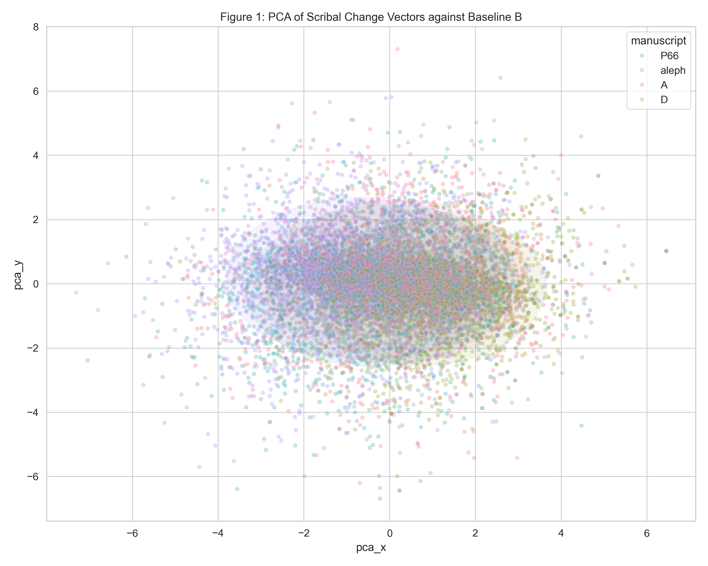
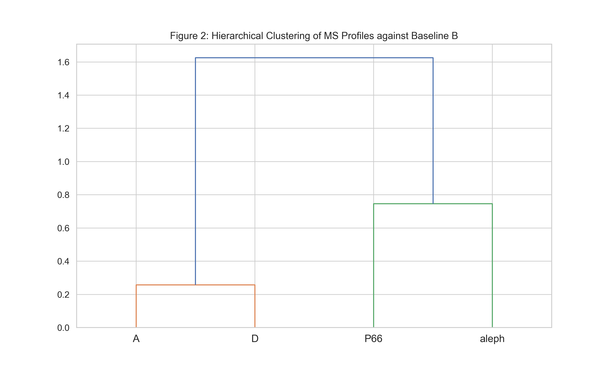
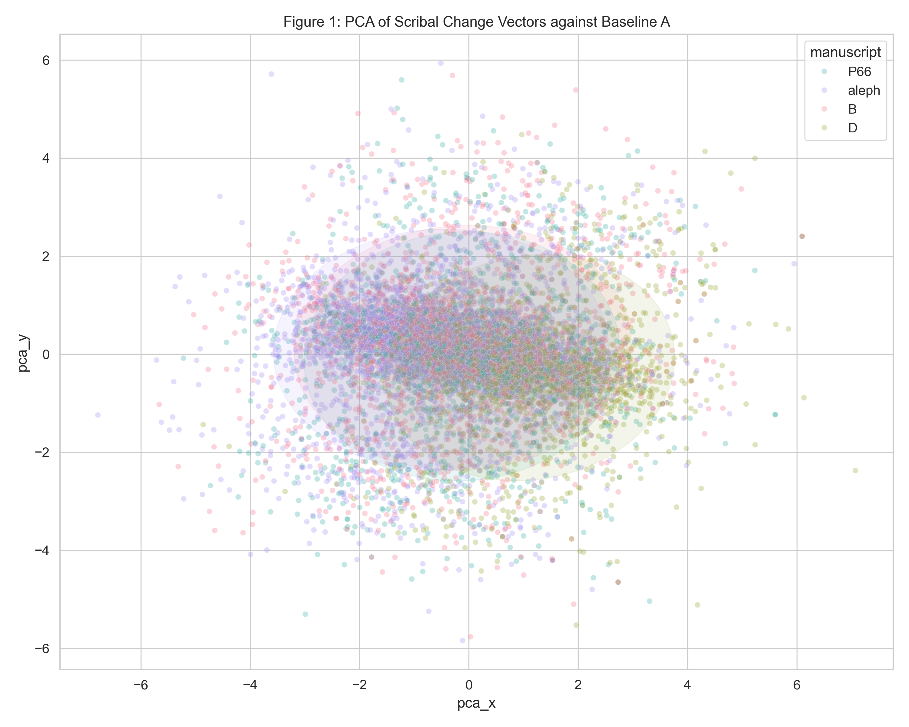
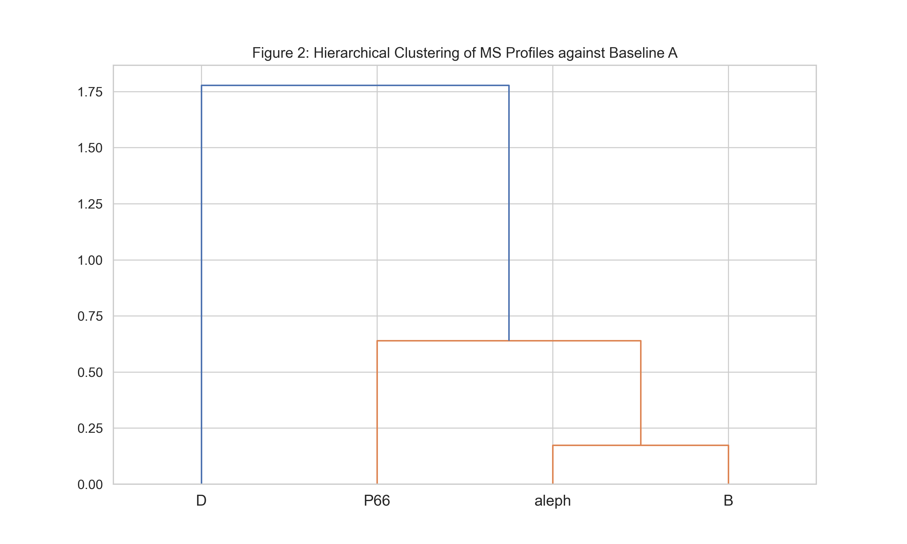
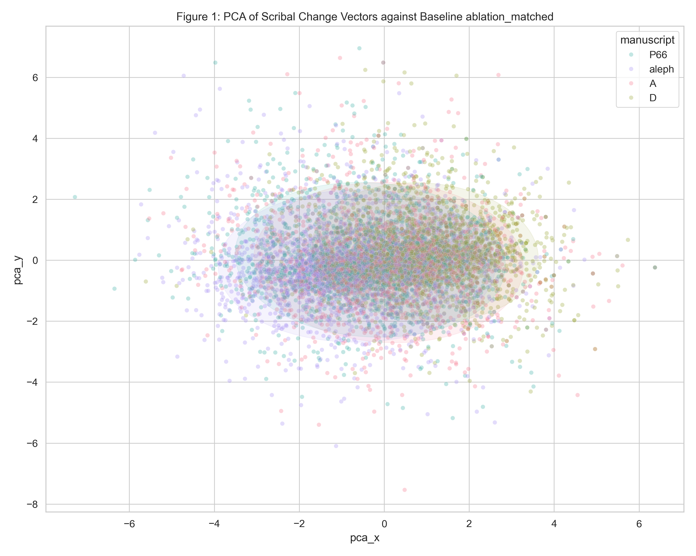
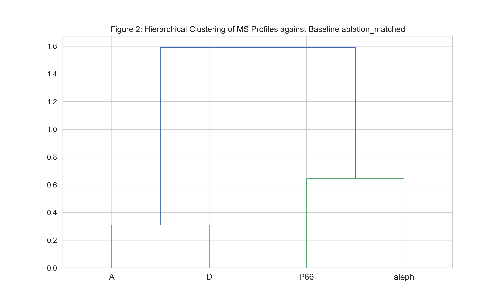
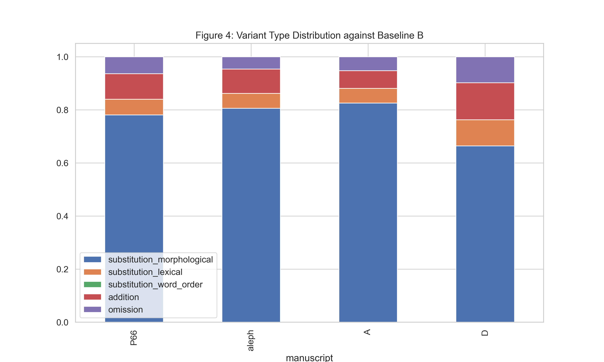
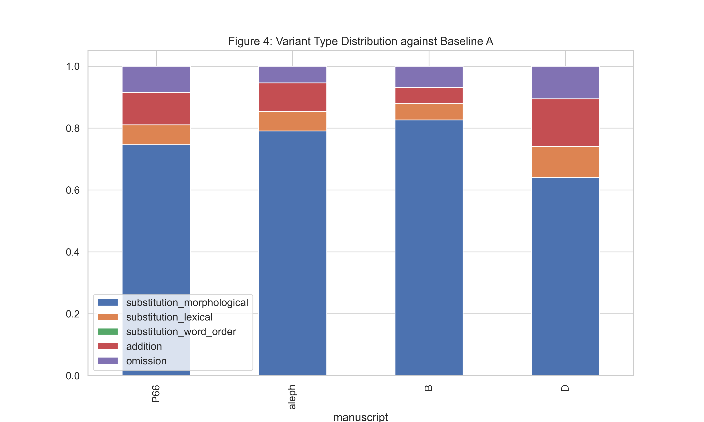
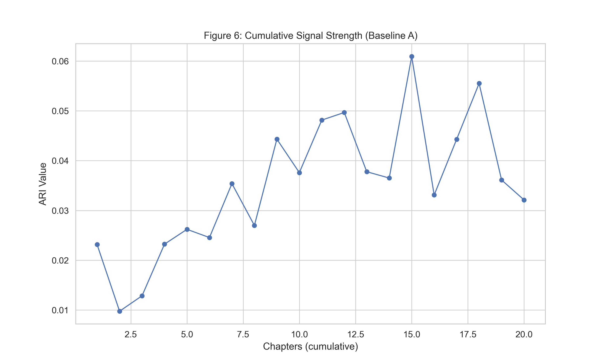
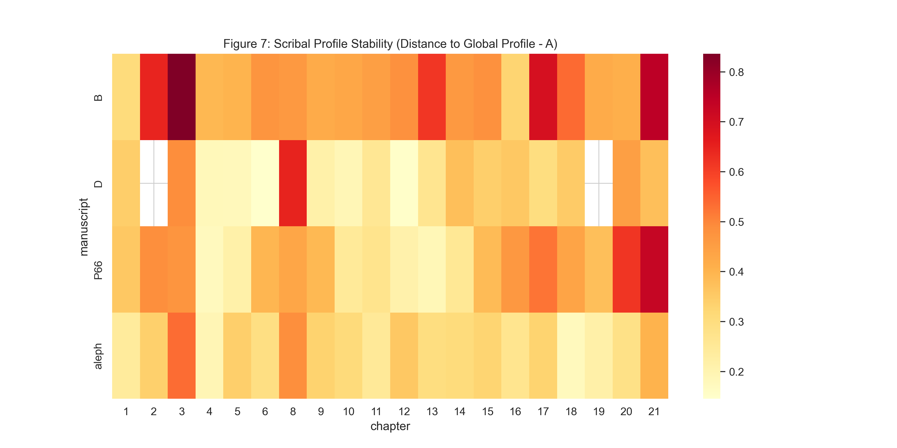

Results
Interactive visualisations of the statistical findings. All values are derived programmatically from the pipeline output files.
Statistical Summary
All configurations tested, with 95% bootstrap confidence intervals where available
Ablation Comparison
Four conditions demonstrating signal robustness. Percentage drops from Baseline B annotated.
Variant Type Distribution
Breakdown of variant categories per manuscript (Baseline B)
Cumulative Signal Strength
ARI as a function of cumulative chapter count — the "law of large numbers" test
The signal stabilises around 13 chapters, after which the ARI plateaus. This suggests a minimum viable corpus of approximately half the Gospel is sufficient to detect the scribal fingerprint reliably.
Chapter Stability
Per-chapter cosine distance from each manuscript's global centroid (Baseline B)
Lower values (lighter cells) indicate chapters where the manuscript's local profile closely matches its overall fingerprint. Higher values (darker cells) may reflect chapters with unusual content or scribal behaviour.
Embedding Space Visualisations
PCA projections and hierarchical clustering of manuscript change vectors






Additional Figures



